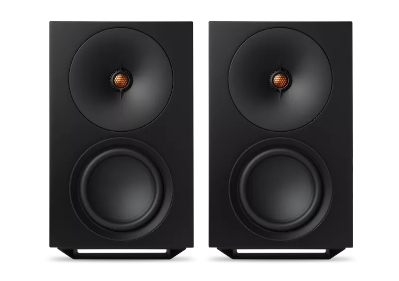
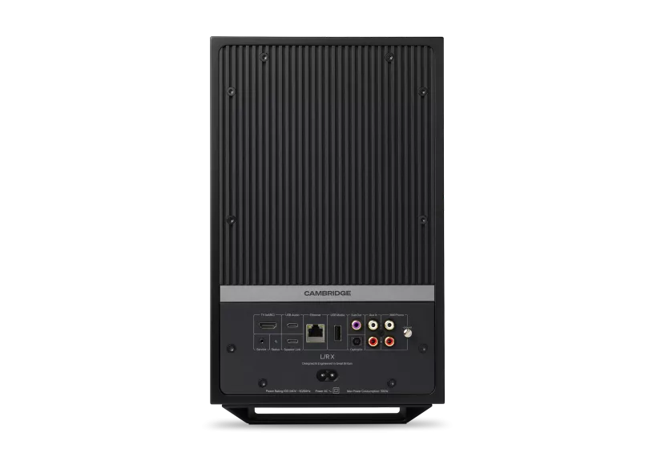
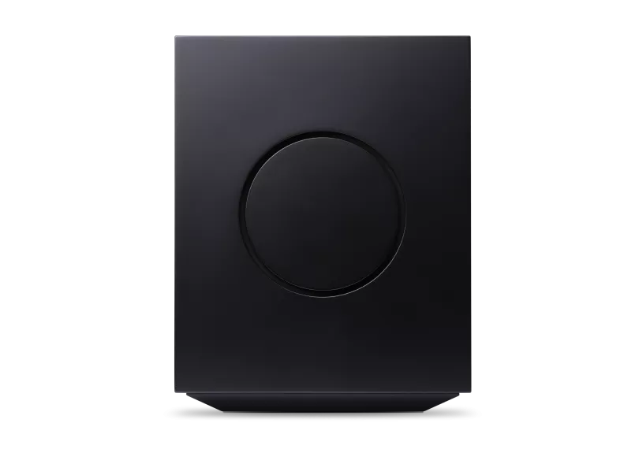
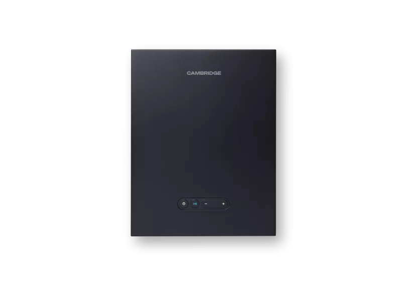
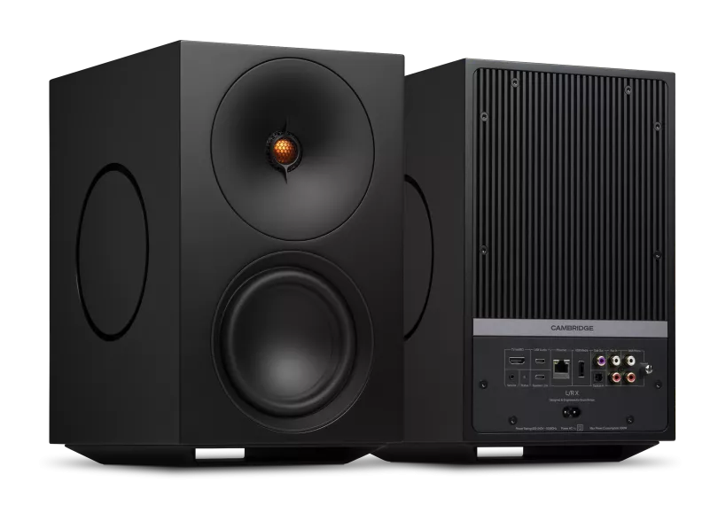
L/R X
ステレオストリーミングスピーカーの限界を打ち破る。革新的な技術と大胆なデザインが融合したL/R Xは、800Wの合計出力でルームフィリングサウンドを実現します。StreamMagic Gen 4搭載でハイレゾストリーミングからレコードまで、あらゆるソースを極上のサウンドで。
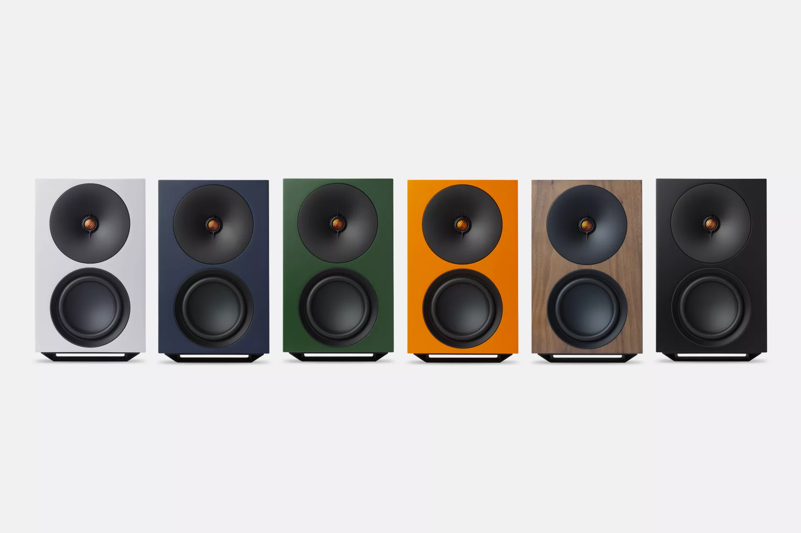
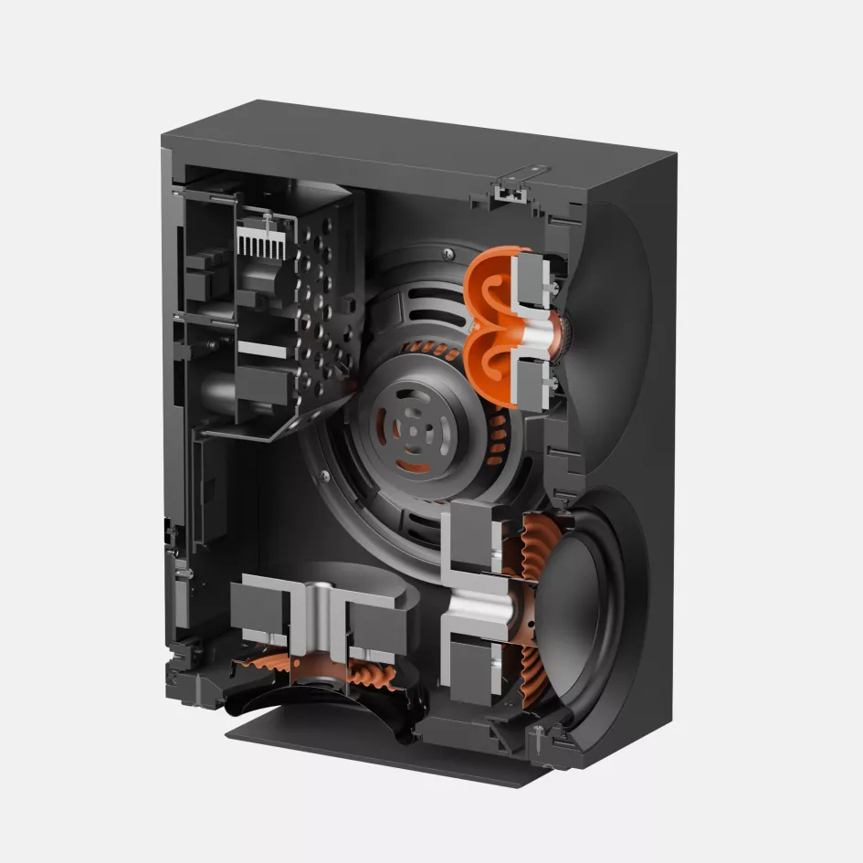
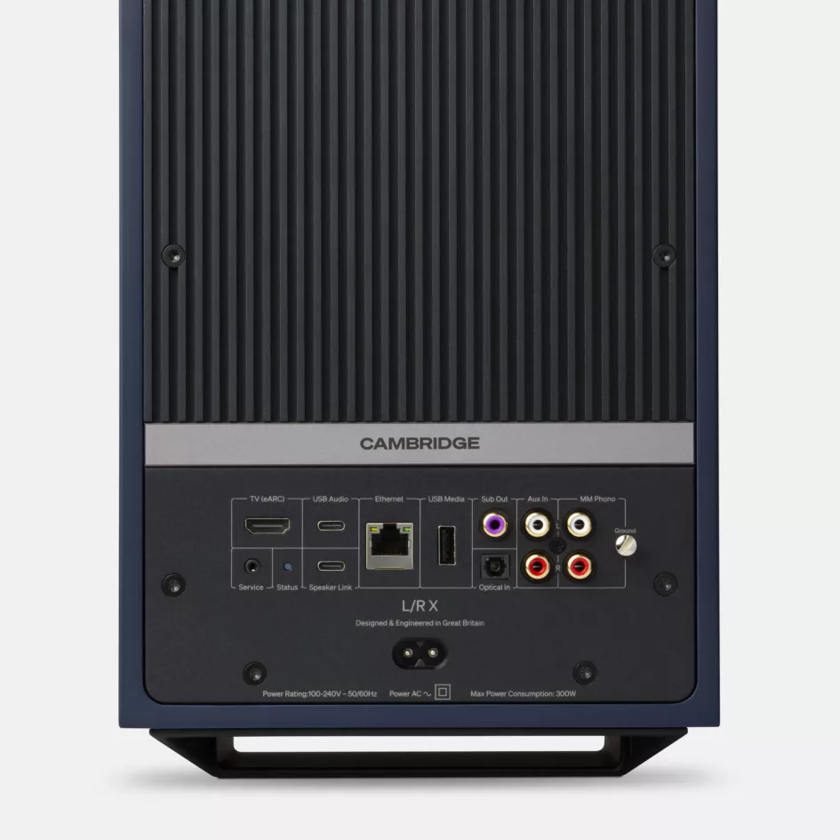
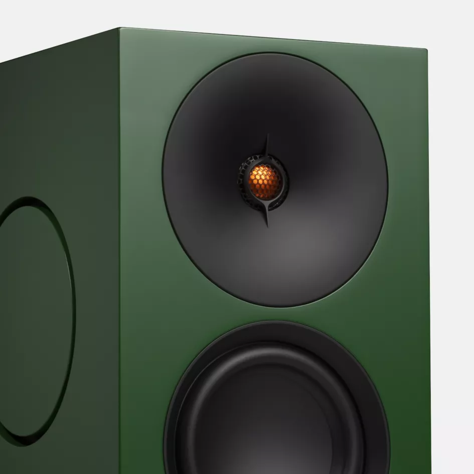
生き生きとしたダイナミックサウンド
広い空間を満たす力強いサウンドをL/R Xが届けます。アコースティックシステムがサブウーファーなしで深い低音を実現し、期待を超えるダイナミクスを維持しながら、どの席でも明瞭さと落ち着きを保ちます。
あらゆるソースを最高の音で
StreamMagicによるハイレゾストリーミング、内蔵フォノステージでのターンテーブル接続、HDMI eARCによるTV連携、Bluetoothでの友人のプレイリスト共有。デジタルクロスオーバーとアドバンスドスピーカープロテクションが、大音量でもパフォーマンスを保護します。
大胆なデザインと自信ある存在感
鮮やかなカラー、フローティングベース、繊細なLEDアンダーライティングが、どの部屋にも自信ある存在感を与えます。建築的なフォルムが現代的なインテリアを引き立てながら、音響目的を称えます。
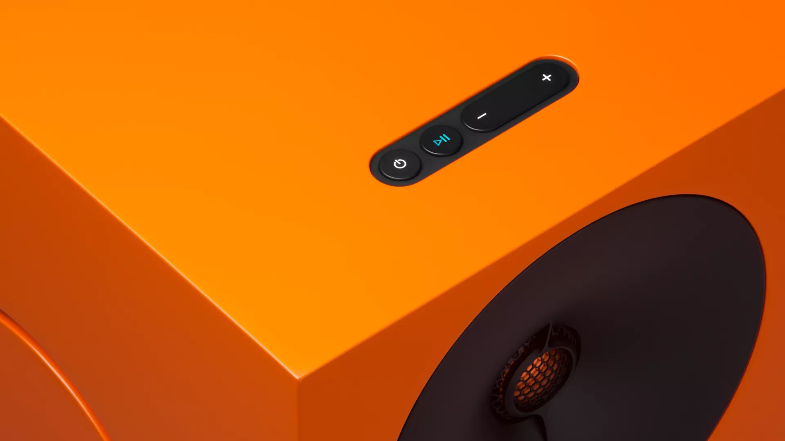
YOUR MUSIC, DELIVERED WITH STREAMMAGIC
StreamMagic Gen 4によるストリーミング
StreamMagic Gen 4プラットフォームが、お気に入りのストリーミングサービスからの高品質オーディオ、インターネットラジオ、ポッドキャストへのアクセスを簡単にし、卓越した音質で楽しめます。

「Cambridge Audioは、オーディオ企業がクラリティとサウンドクォリティをどこまで追求できるかの限界を押し広げ続けている」
卓越したエンジニアリング
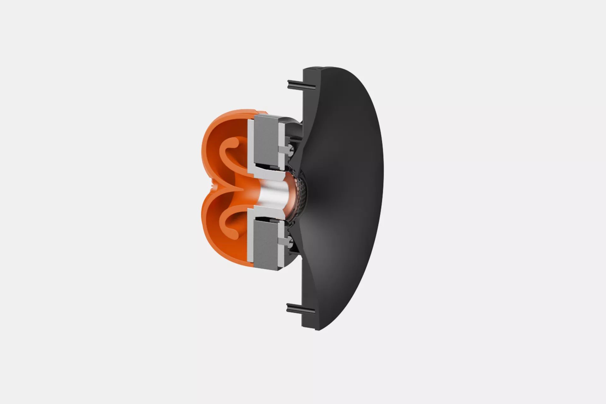
革新的なカスタムツイーターが実現するディテールと奥行き
独自の28mmツイーターは、デュアルラジアスアルミニウムドーム、カスタムウェーブガイド、位相リング、先進的なリアチャンバー設計により、揺るぎないディテールと奥行きを実現します。
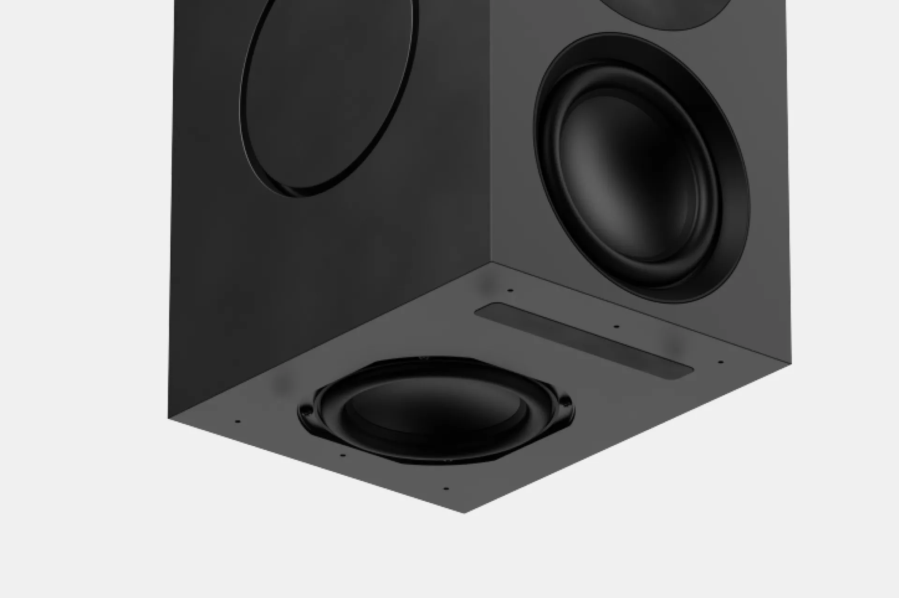
細部にこだわる低域のポイズ
フロントフェイシングと下向きに隠された5インチウーファーが、最低周波数まで微妙なニュアンスとディテールを引き出し、歪みを排除します。
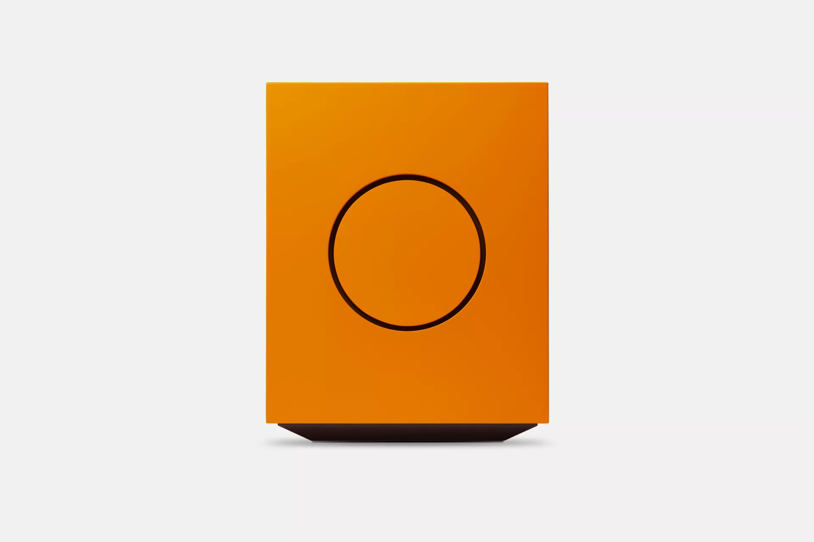
サブウーファーなしのパワフルな低音
デュアル6インチパッシブラジエーターが、はるかに大型のスピーカーに期待される低域の重量感を35Hzまで生み出します。
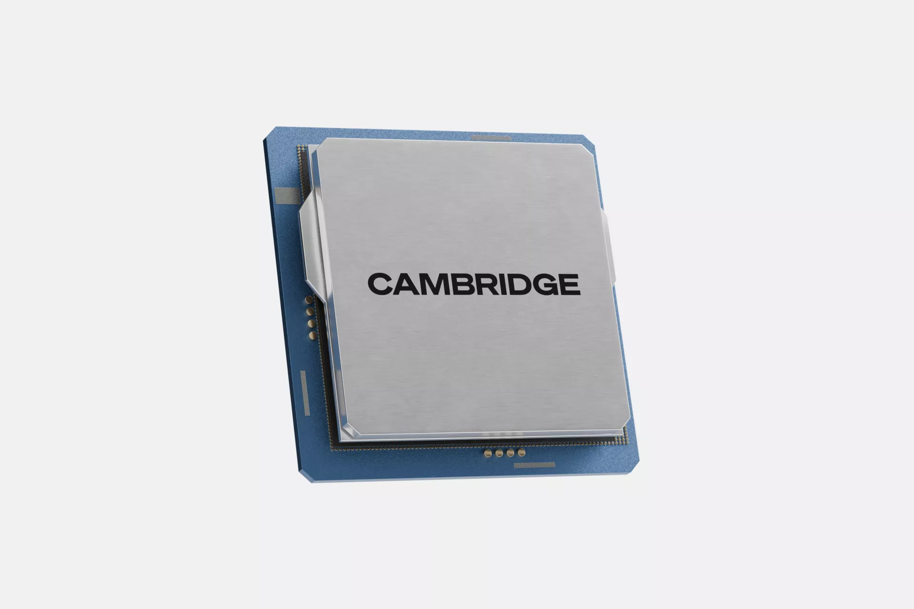
すべての曲の繊細なディテールを引き出す
精密な64ビットDSPパイプラインが、従来の処理では失われる微妙なテクスチャーを捉え、最小限の音楽的ディテールまで保持します。
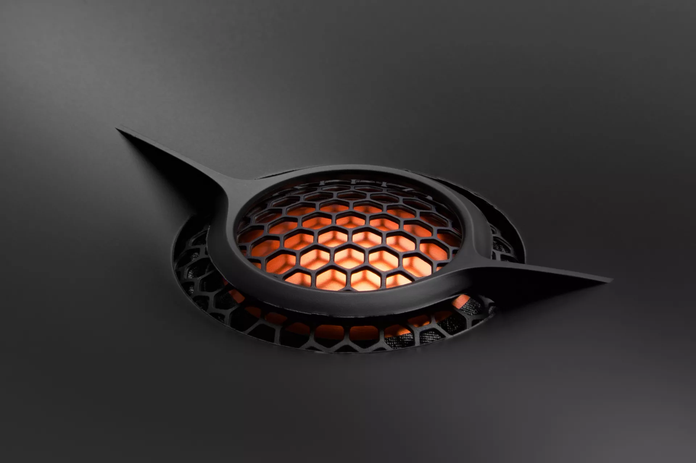
あらゆるシーンに対応
ルーム最適化とWiSAワイヤレスリンク、DynamEQと強化保護機能、Google Cast、Roon、AirPlay 2によるマルチルームオーディオが、最も困難な場面にもL/R Xを適応させます。

存在感と目的を持ったフラッグシップデザイン
プレミアムウォールナットを含む6色の大胆なカラーから選べる、パフォーマンスとデザインが等しく重視されたシステム。
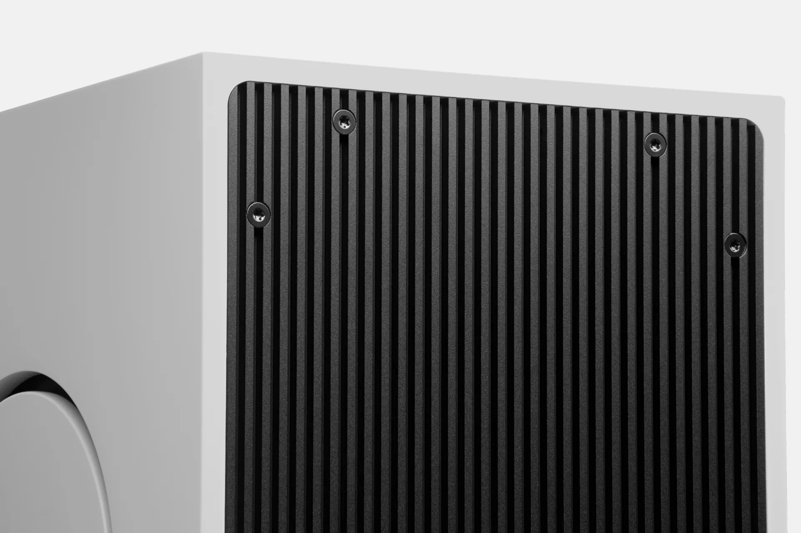
真の音楽愛好家のための野心的なエンジニアリング
プレミアム素材、先進的な音響思考、パワフルなアンプリフィケーションを組み合わせ、スリリングで誠実、そして永続的なリスニング体験を実現します。

マルチルーム、あなたのスタイルで
複数のCambridge Audioストリーミングデバイスを同期して、部屋から部屋へ音楽をシームレスに流しましょう。
Google Cast、Apple AirPlay 2、ROON互換性が、完璧なマルチルームシステムを構築するための幅広い柔軟性を提供します。
すべての部屋を一つの大きなパーティーシステムにグループ化するか、空間から空間へ音楽を追いかけさせるか—マルチルームオーディオがリスニングを継続させます。